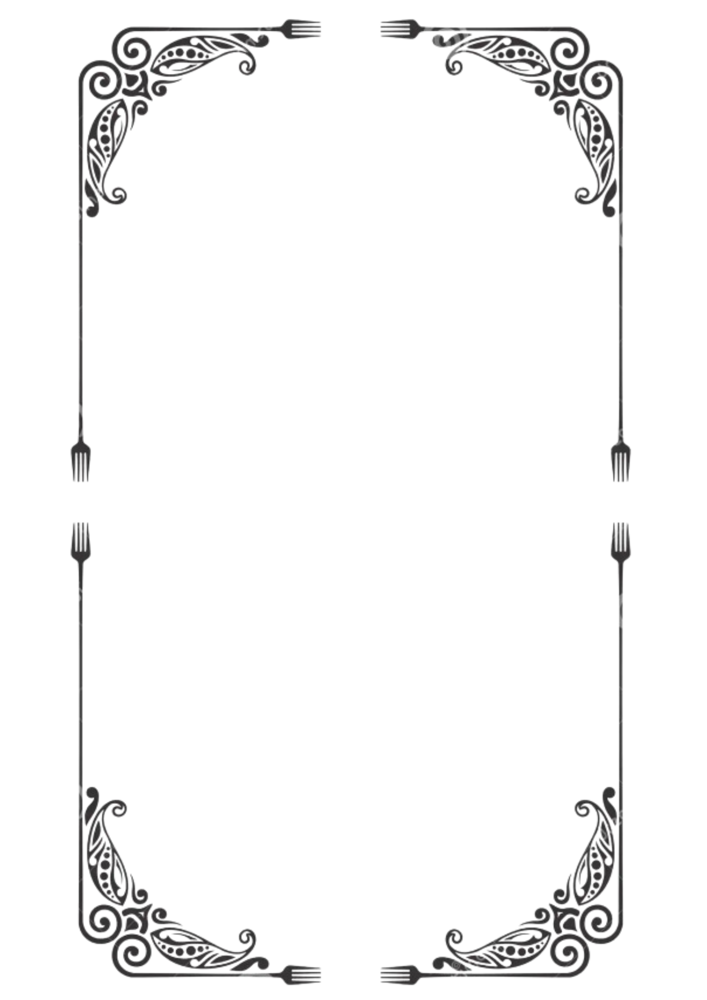

Doces
Salgados
Saladas

SOBRE NÓS!
Bem-vindo ao 28Food, seu destino online para explorar
uma infinidade de deliciosas receitas que vão além dos
limites da imaginação culinária. Fundado em 2024 por
uma equipe visionária de técnicos de informática da turma TI28.
o 28Food nasceu da paixão compartilhada
por gastronomia e tecnologia. Combinando habilidades técnicas
avançadas e um amor genuíno pela culinária, essa equipe dedicada
trouxe à vida uma plataforma inovadora que cativa os
paladares e inspira os cozinheiros de todas as habilidades.
Imagine uma biblioteca virtual repleta de receitas cuidadosamente
selecionadas, desde clássicos reconfortantes até criações
vanguardistas, todas disponíveis ao seu alcance com
apenas alguns cliques.
No 28Food, a jornada culinária começa com uma interface
intuitiva e amigável, projetada para simplificar a busca
e a exploração de receitas. Seja você um novato na cozinha ou
um chef experiente, encontrar inspiração e orientação
para suas aventuras culinárias nunca foi tão fácil.
FIM